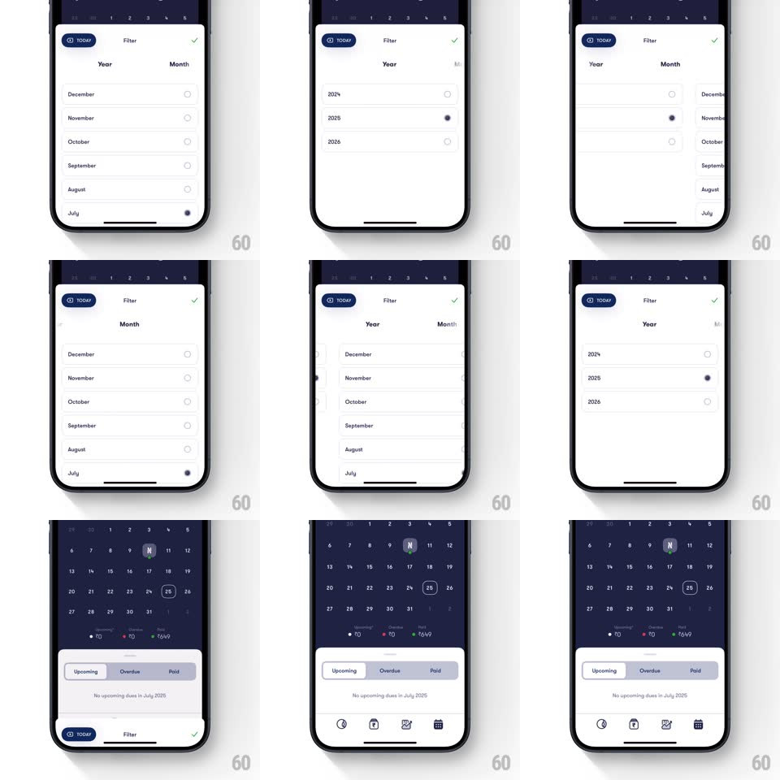

Media
Frame-by-frame

Rebuild this interaction 1:1: Fold's calendar filter sheet - a segmented Year | Month control drives a horizontal swipe between the month list and the year list, the selection dot fills with a pop, and the sheet slides down to reveal the calendar.

Rebuild this interaction 1:1: Fold's calendar filter sheet - a segmented Year | Month control drives a horizontal swipe between the month list and the year list, the selection dot fills with a pop, and the sheet slides down to reveal the calendar. ## Integration Integration: stack-agnostic spec - springs given as stiffness/damping, timed motions as duration + curve; map every value to your framework and animation library of choice. ## Scene A bottom sheet over Fold's dark calendar: a "TODAY" chip, Filter title and confirm check on the header, a Year | Month segmented control, then a scrollable list of radio rows - months (December down to July) or years (2024, 2025, 2026). Behind the sheet: the month grid with Upcoming / Overdue / Paid pills. ## Motion spec Pattern: segmented horizontal page swipe, ~350ms. - Tab switch: tapping the segment (or swiping) slides the lists horizontally - the current list exits opposite the swipe direction (translateX -100%, 300ms, ease-in-out) as the other enters (spring ~340/26, 350ms); the segment indicator pill slides to match (250ms). - Swipe: lists track the finger 1:1, page-snapping past 40% or on fling. - Select: tapping a row fills its radio dot (scale 0 -> 1, spring ~500/22, 200ms) with a check-state color; the previous selection empties. - Dismiss: the confirm check slides the sheet down (spring ~360/28, 350ms) while the calendar behind rises into focus (scale 0.98 -> 1 + fade). ## Calibration - Lists cross-fade nothing - it is a pure horizontal page transition. - Only one selected row per list; selection persists across tab switches. ## Reduced motion Crossfade between lists (200ms). ## Don't miss - The segmented pill and the list page stay in sync, including mid-drag. - The calendar behind is visible through the sheet's top edge and animates on dismiss.